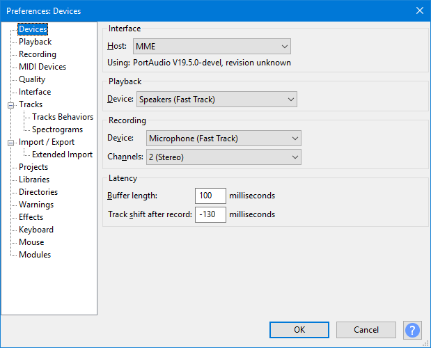

Audacity Setup and Configuration
Setting Your Audacity Preferences
The main place to set up Audacity and customize it to work the way that you require is to use Audacity's Preferences dialog screens.
Preferences let you change most of the default behaviors of Audacity. The Preferences dialog can be accessed using the (or by using the shortcut Ctrl + P). On a Mac, Preferences can be found under the or its shortcut ⌘ + ,. The Preferences dialog is split into a number of sections each with its own dialog page. There are many settings that can be made in your Preferences, so do take some time to explore and understand these.
The image below shows an example of the Devices section of the Preferences dialog, showing default settings for Host and Channels.
- Accessed by: (on a Mac )
- 
- Example of the Devices section of the Preferences dialog, showing default settings for Host and Channels..
- Click on any other Preferences sections in the above image to read about those Preferences.
Some of the more commonly used settings can be changed and reset from the main Audacity Window:
- Device Toolbar can be used to change the recording and playback devices, the recording host and the number of channels
- Selection Toolbar can be used to change the Project Rate and Selection Format units
- Transport Menu can be used to control Overdub, Software Playthrough and Sound Activated Recording.
Using these can be quicker than accessing the preferences dialog to change these settings.
You can also reset Audacity settings to their factory-shipped state. This may occasionally fix unexpected or unwanted behavior.
Connecting your equipment
For help with connecting your equipment to your computer for recording please see the following tutorials:
- Copying tapes, LPs or MiniDiscs to CD or your computer for help connecting turntables, tape-decks and MiniDisc players.
- Tutorial - Your First Recording for microphones, keyboards and guitars.